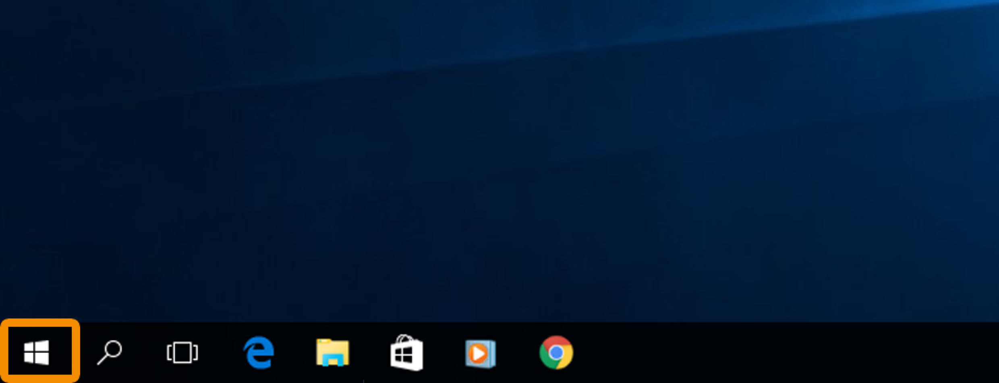
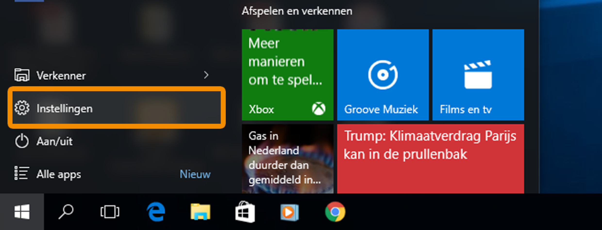
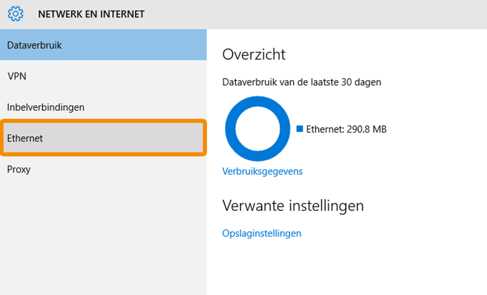
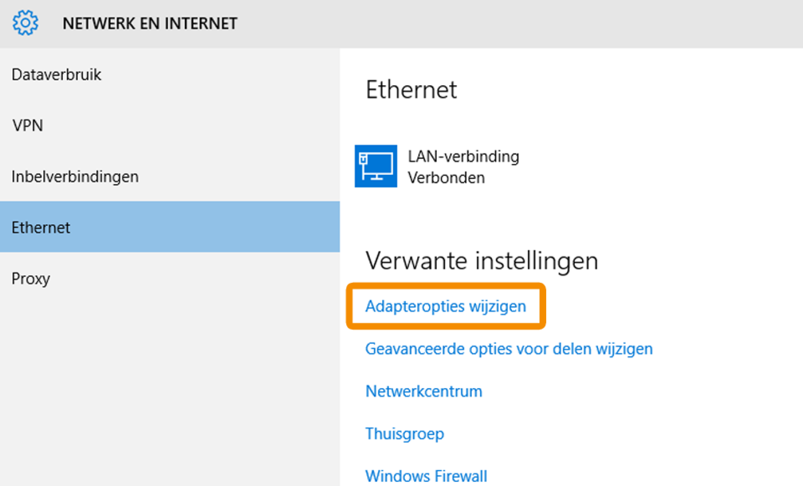
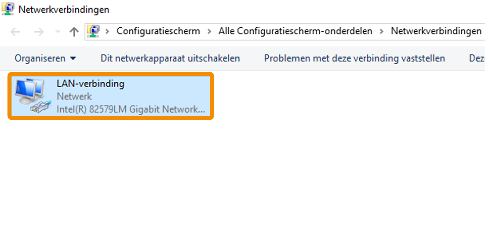
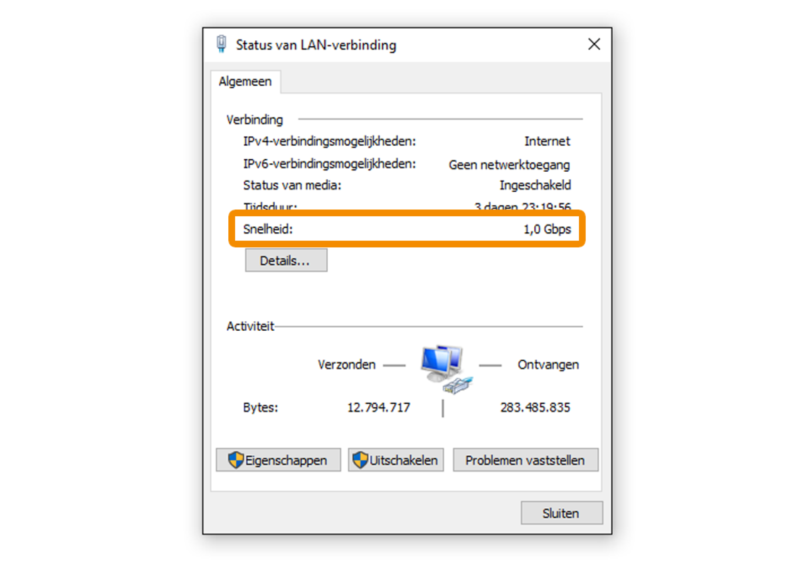

<div id="showcase">

  <div class="container">

    <h1 style=" color:black">Controleer de snelheid van je netwerkkaart</h1>

    <br>

    <!--Stap 1-->
    <h6 style=" color:black"><h1>a.</h1>
      Klik op <b>Start</b> (het vierkante Windows-logo linksonder in de taakbalk).
    </h6>
    

    <!--Stap 2-->
    <h6 style=" color:black"><h1>b.</h1>
      Klik op <b>Instellingen.</b> (Het tandwiel-icoontje).
    </h6>
    

    <!--Stap 3-->
    <h6 style=" color:black"><h1>c.</h1>
      Klik op <b>Netwerk en internet.</b></h6>
    

    <!--Stap 4-->
    <h6 style=" color:black"><h1>d.</h1>
      Klik op <b>Ethernet</b>.
    </h6>
    

    <!--Stap 5-->
    <h6 style=" color:black"><h1>e.</h1>
      Klik op de optie <b>Adapteropties wijzigen.</b></h6>
    

    <!--Stap 1-->
    <h6 style=" color:black"><h1>f.</h1>
      Dubbelklik op <b>LAN-verbinding</b>.
    </h6>
    

    <!--Stap 1-->
    <h6 style=" color:black"><h1>g.</h1>
      Kijk naar Snelheid. Staat hier 100.0 Mb/s, dan is de maximale snelheid van je internetverbinding ca. 85 Mb/s. Deze
      beperkte snelheid kan veroorzaakt worden door je netwerkkaart, je netwerkkabel of bijvoorbeeld een router of
      switch.

      Staat er 1,0 Gb/s, dan kan je netwerkkaart snelheden aan tot 990 Mb/s.
    </h6>
    

    <br>

    <h1 style=" color:black">Staat hier de juiste snelheid?</h1>


    <!--Ja-->
    <div class="service">
      <button class="buttonLeft" onclick="document.getElementById('id01').style.display='block'"
              class="w3-button w3-black">Ja
      </button>
    </div>

    <!--Nee-->
    <div class="service">
      <button class="buttonRight" onclick="document.getElementById('id02').style.display='block'"
              class="w3-button w3-black">Nee
      </button>
    </div>

    <!--Pop-up-->
    <div id="id01" class="w3-modal">
      <div class="w3-modal-content">
        <div class="w3-container">
          <span onclick="document.getElementById('id01').style.display='none'" class="w3-button w3-display-topright">&times;</span>
          <h4 style="text-align:center; color: black;"><b>De aangegeven snelheid is correct.</b></h4>

          <div style="text-align: center;">

            <p>Je netwerkkaart is dus niet de boosdoener.

              Gelukkig kunnen we nog een aantal oplossingen proberen in onze checklist.</p>

            <a href="client-suggestions-internet-cable-slow" class="buttonLeft">Zie checklist</a>


          </div>

        </div>

      </div>

    </div>

    <div id="id02" class="w3-modal">
      <div class="w3-modal-content">
        <div class="w3-container">
          <span onclick="document.getElementById('id02').style.display='none'" class="w3-button w3-display-topright">&times;</span>
          <h4 style="text-align:center; color: black;"><b>De aangegeven snelheid is niet correct.</b></h4>

          <div style="text-align: center;">

            <p>Kijk op de website van de fabrikant van je computer voor de laatste versie van je netwerkkaart drivers en
              installeer deze opnieuw.</p>

            <a href="client-suggestions-internet-cable-slow" class="buttonLeft">Zie checklist</a>


          </div>

        </div>

      </div>

    </div>

  </div>


</div>

